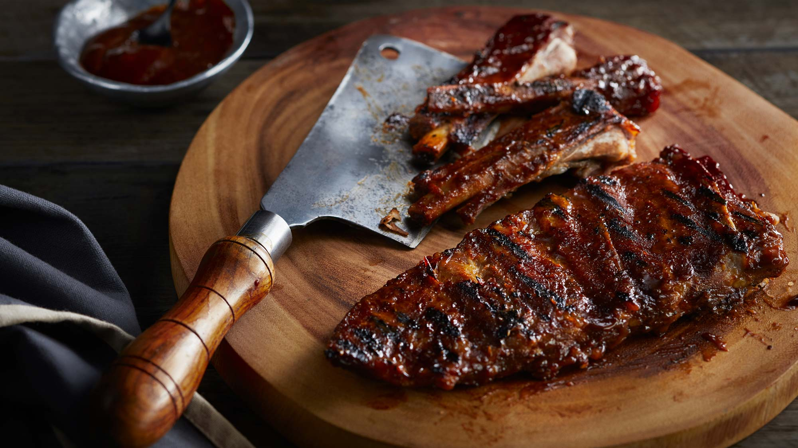

Texas Pork Ribs

Perfect choice for those who loves pork
This is a multiple prize-winning master recipe.
It has several steps that can be used on pork
spareribs, country-style ribs, or pretty much
any other type of pork rib; simply adjust oven
time up for meatier cuts. Use some soaked wood
chips on the barbecue. The smokier the grill,
the better the ribs will taste!
Ingredients
- 6 pounds pork spareribs
- ½ cups white sugar
- ¼ cup salt
- 2 ½ tablespoons ground black pepper
- 3 tablespoons sweet paprika
- 1 teaspoon cayenne pepper, or to taste
- 2 tablespoons garlic powder
- 5 tablespoons pan drippings
- ½ cup chopped onion
- 4 cups ketchup
- 3 cups hot water
- 4 tablespoons brown sugar
- cayenne pepper to taste
- salt and pepper to taste
- 1 cup wood chips, soaked
Steps
- Clean the ribs, and trim away any excess fat. In a medium
bowl, stir together the sugar, 1/4 cup salt, ground black
pepper, paprika, 1 teaspoon cayenne pepper, and garlic
powder. Coat ribs liberally with spice mix. Place the ribs in
two 10x15 inch roasting pans, piling two racks of ribs per
pan. Cover, and refrigerate for at least 8 hours.
-
Preheat oven to 275 degrees F (135 degrees C). Bake uncovered for 3 to 4
hours, or until the ribs are tender and nearly fall apart.
-
Remove 5 tablespoons of drippings from the bottom of the roasting pans,
and place in a skillet over medium heat. Cook onion in pan drippings until
lightly browned and tender. Stir in ketchup, and heat for 3 to 4 more minutes,
stirring constantly. Next, mix in water and brown sugar, and season to taste
with cayenne pepper, salt, and pepper. Reduce heat to low, cover, and
simmer for 1 hour, adding water as necessary to achieve desired thickness.
-
Preheat grill for medium-low heat.
-
When ready to grill, add soaked wood chips to the coals or to the smoker box
of a gas grill. Lightly oil grill grate. Place ribs on the grill two racks at a time so
they are not crowded. Cook for 20 minutes, turning occasionally. Baste ribs
with sauce during the last 10 minutes of grilling, so the sauce does not burn.